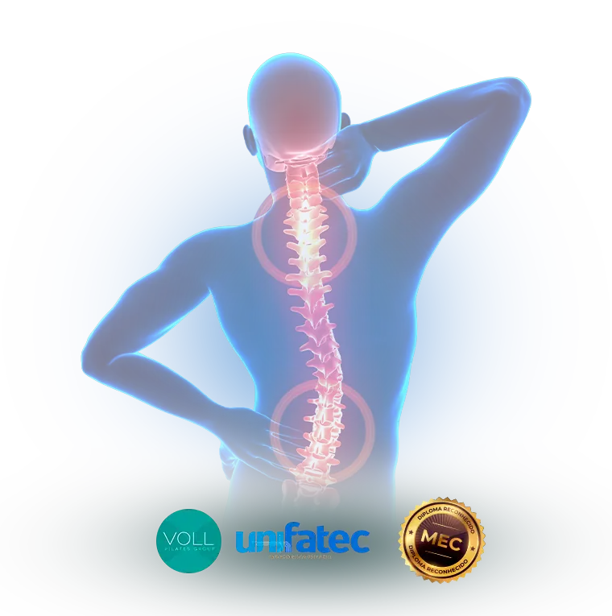
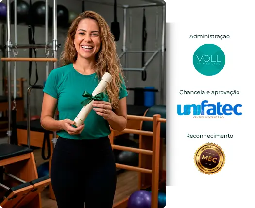
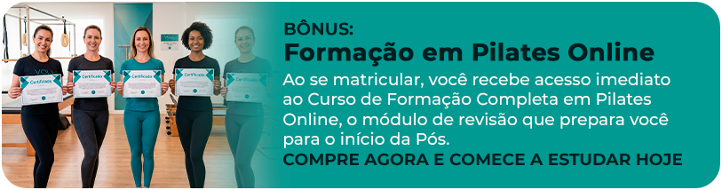

Domine a biomecânica. Desenvolva raciocínio clínico. Atenda alunos com patologias com muito mais segurança no Pilates.
INÍCIO EM SETEMBRO
CONDIÇÕES ESPECIAIS DE LANÇAMENTO
- Matrícula ISENTA
- 80% de desconto na primeira mensalidade
BÔNUS: Formação em Pilates Online e Kit com Livros Físicos

AULAS AO VIVO
+ Acesso às gravações
410 HORAS DE FORMAÇÃO
APROFUNDADA
DIPLOMA UNIVERSITÁRIO
RECONHECIDO PELO MEC
SEM OBRIGATORIEDADE DE TCC
SOMENTE HOJE
18 meses de acesso
ACESSO VITALÍCIO
Tenha acesso à todo o conteúdo da Pós-Graduação PARA SEMPRE
VOCÊ ESTÁ A UM PASSO DE TRANSFORMAR
SUA CONDUTA NO PILATES
UMA FORMAÇÃO ONLINE BASEADA EM EVIDÊNCIAS
Para você compreender o que existe por trás de cada movimento, avaliar melhor e construir aulas mais seguras para casos clínicos reais.
ESSA PÓS-GRADUAÇÃO CONECTA
 Patologias
Patologias
 Biomecânica
Biomecânica
 Avaliação Funcional
Avaliação Funcional
 Aplicação PRÁTICA no MAT e em Aparelhos
Aplicação PRÁTICA no MAT e em Aparelhos

Ao final dessa pós-graduação,
você será capaz de:
aprofundado
em patologias
e biomecânica
aplicada no
Pilates.
raciocínio
clínico para
avaliar e
planejar aulas
eficientes.
aulas com
adaptações,
contraindicações
e progressões
seguras.
condutas
genéricas e
tomar decisões
de forma mais
consciente.
sua atuação
por meio de
conhecimento
técnico
aplicável.
Condições especiais de lançamento
Nova turma começando em setembro de 2026
ISENÇÃO DEMATRÍCULA
De R$299 por
R$ 0Na primeira
mensalidade
Acesso vitalício à
pós-graduação
Tenha acesso
às aulas e
materiais
por 18 meses
para sempre
Para os
50 primeiros
Kit físico entregue
em casa com:
- 2 livros da
Coletânea Pilates - Kit do aluno
exclusivo VOLL

A PRIMEIRA TURMA JÁ MOSTROU O IMPACTO DESTA FORMAÇÃO


“Estou adorando cada módulo. Os professores são excepcionais e dá vontade de estudar mais ainda sobre cada assunto. Material muito rico e atualizado e indico muito.“

“Estou achando maravilhoso, muito conteúdo bom, professores maravilhosos que agregam muito para o meu aperfeiçoamento. Grade curricular muito bem pensada, estou amando. “

“O conteúdo da Pós-Graduação Internacional Pilates em Reabilitação e Grupos Especiais é rico e diversificado, gostei do quanto os materiais teóricos de leitura são atualizados e alguns em inglês, professores muito capacitados e tratam dos temas com segurança, transmitindo confiança. “

“Eu estou fazendo duas Pós-Graduação, a primeira é em Pilates e a segunda que comecei agora pouco, é presencial sobre Medicina do Movimento e do Exercício Físico. Apesar da Pós Internacional em Pilates ser online, estou aprendendo muito mais do que a presencial. Muito obrigado Grupo VOLL por estar abrindo minha mente em relação ao Pilates.“

“Fiz meu curso em Pilates no ano de 2017 e nunca mais me atualizei no assunto Pilates, fiz diversos cursos, porém não tinha dúvidas em associar ao pilates. Busquei a Pós com o objetivo de me atualizar e amei os assuntos que seriam abordados e estou amando, pois agrega a patologia com os exercícios e aparelhos, além de atualizar tudo que envolve o Pilates. “

“Estou adorando cada módulo. Os professores são excepcionais e dá vontade de estudar mais ainda sobre cada assunto. Material muito rico e atualizado e indico muito.“
“Estou achando maravilhoso, muito conteúdo bom, professores maravilhosos que agregam muito para o meu aperfeiçoamento. Grade curricular muito bem pensada, estou amando. “
“O conteúdo da Pós-Graduação Internacional Pilates em Reabilitação e Grupos Especiais é rico e diversificado, gostei do quanto os materiais teóricos de leitura são atualizados e alguns em inglês, professores muito capacitados e tratam dos temas com segurança, transmitindo confiança. “
“Eu estou fazendo duas Pós-Graduação, a primeira é em Pilates e a segunda que comecei agora pouco, é presencial sobre Medicina do Movimento e do Exercício Físico. Apesar da Pós Internacional em Pilates ser online, estou aprendendo muito mais do que a presencial. Muito obrigado Grupo VOLL por estar abrindo minha mente em relação ao Pilates.“
“Fiz meu curso em Pilates no ano de 2017 e nunca mais me atualizei no assunto Pilates, fiz diversos cursos, porém não tinha dúvidas em associar ao pilates. Busquei a Pós com o objetivo de me atualizar e amei os assuntos que seriam abordados e estou amando, pois agrega a patologia com os exercícios e aparelhos, além de atualizar tudo que envolve o Pilates. “
GRADE CURRICULAR
*
Confira as aulas de cada módulo da sua trajetória acadêmica.
BLOCO 1 - Revisão do Método Pilates
DISCIPLINA
PROFESSOR
DATA
(Curso de Formação Completa em Pilates Online)
BLOCO 2 - Anatomia e Biomecânica Aplicada às Patologias
DISCIPLINA
PROFESSOR
DATA
Fáscias e trilhos anatômicos na Prescrição do Movimento
BLOCO 3 - Coluna Vertebral
DISCIPLINA
PROFESSOR
DATA
BLOCO 4 - Reabilitação dos Complexos Articulares
DISCIPLINA
PROFESSOR
DATA
BLOCO 5 - Condições Especiais e Sistêmicas
DISCIPLINA
PROFESSOR
DATA
* As datas, horários, cronograma, ordem dos módulos e professores da Pós-Graduação poderão ser alterados por necessidade pedagógica, operacional ou institucional, estando o aluno ciente e de acordo no ato da contratação.
SUPORTE COMPLETO PARA TODAS AS ESTAPAS
DO SEU DESENVOLVIMENTO
CONTEÚDO APROFUNDADO VOLTADO PARA PATOLOGIAS
Estude condições musculoesqueléticas, neurológicas, psicossomáticas e reumatológicas que fazem parte da realidade dos Studios.
BIOMECÂNICA DO PILATES APLICADA À PRÁTICA
Compreenda forças, movimentos, compensações e estratégias para construir intervenções mais coerentes com cada caso.
AVALIAÇÃO E
RACIOCÍNIO CLÍNICO
Aprenda a observar disfunções, organizar informações e planejar aulas com objetivos, critérios e progressões mais claros.
AULAS AO VIVO COM ESPECIALISTAS
Participe dos encontros em tempo real, acompanhe as explicações e tire dúvidas diretamente com os professores.
AULAS GRAVADAS PARA ASSISTIR NO SEU RITMO
Se não puder estar ao vivo, assista à gravação depois. Reveja os conteúdos quantas vezes precisar com o acesso vitalício de lançamento.
MATERIAL DIDÁTICO COM REFERÊNCIAS
Aprofunde o estudo com materiais de apoio e referências bibliográficas que dão mais segurança científica à sua prática.
PÓS-GRADUAÇÃO SEM TCC
Concentre sua energia em aprender, aplicar e evoluir profissionalmente, sem a obrigatoriedade de um Trabalho de Conclusão de Curso.
PLATAFORMA UNIVERSITÁRIA COM SUPORTE VOLL
Acesse aulas, materiais, cronograma, avisos e suporte em um ambiente acadêmico organizado.
Ao fim do curso, você terá um diploma universitário de 410 horas te certificando como Pós-Graduado em Pilates para Reabilitação e Grupos Especiais
CORPO DOCENTE QUE UNE EXPERIÊNCIA, CIÊNCIA E PRÁTICA NO PILATES

KATHY
COREY
País: EUA
ÁLVARO
CASTRO
País: Brasil

GLAUCIA
ADRIANA
País: Brasil
ADRIANA
COLDEBELLA
País: Brasil

MARIA LINA
LEITE
País: Brasil

MARLON
BLUNER
País: Brasil
GABRIELA
ZAPAROLI
País: Brasil
LUCIANA
CASEMIRO
País: Brasil
RENATHA
CRUZ
País: Brasil
ALAÍDE
ARAGÃO
País: Brasil
FERNANDA
GLATTHARDT
País: Brasil

MARCILENE
FERRER
País: Brasil
RAPHAEL
SANTOS
País: Brasil

KARLA
SELEME
País: Brasil

RENATA
VIEIRA
País: Brasil

EMANUELLE
LACERDA
País: Brasil

DANIELLE
SOUZA
País: Brasil

MAURÍCIO
ALMEIDA
País: Brasil

ÁUREA
BASSO
País: Brasil
BRUNA
TEOTÔNIO
País: Brasil
CAMILA
LUQUINI
País: Brasil
IONÁ
QUINTEIROS
País: Brasil
ESTELA MARIS
BORTOLETTI
País: Brasil
CRISTINA
CARVALHO
País: Brasil
PRONTO PARA COMEÇAR?
ACESSO IMEDIATO
Assim que sua matrícula for confirmada, você já poderá iniciar o primeiro módulo da Pós-Graduação, e se preparar para a primeira aula ao vivo em setembro.
AULAS GRAVADAS
Não conseguiu participar ao vivo? Assista depois e cumpra sua carga acadêmica no seu ritmo.
ACESSO VITALÍCIO
Durante o lançamento, seu acesso às aulas e aos materiais da Pós-Graduação não expira. Finalize a Pós no seu ritmo e reveja as aulas quantas vezes desejar para sempre!
DIPLOMA DE 410 HORAS
Ao concluir as disciplinas e os requisitos acadêmicos, você poderá solicitar seu diploma universitário reconhecido pelo MEC.
QUEM SOMOS
Conheça o Grupo VOLL Pilates e a UNIFATEC
.png "pos-patologias(1)")
O Grupo VOLL Pilates é o maior grupo empresarial de ensino do Método Pilates da América Latina.
São mais de 15 anos de atuação, mais de 105 mil profissionais formados, presença com cursos em mais de 114 cidades e quase 80 mil alunos alcançados no ensino online.
.png "pos-patologias")
É por meio dessa parceria que você recebe uma formação administrada por quem vive o Pilates e um diploma universitário com reconhecimento oficial.
PERGUNTAS FREQUENTES
1. A Pós-Graduação é reconhecida pelo MEC?
Sim. A Pós-Graduação em Pilates para Patologias e Biomecânica Aplicada é realizada em parceria com a UNIFATEC — Centro Universitário, responsável pela emissão do diploma universitário.
2. Qual é a carga horária?
A formação possui 410 horas certificadas.
3. Quando começo a estudar?
Imediatamente após a confirmação da matrícula. Você recebe acesso ao Curso de Formação Completa em Pilates Online para revisar os fundamentos antes da primeira aula ao vivo.
4. Quando acontece a primeira aula ao vivo?
A primeira aula ao vivo da segunda turma acontece em 26 de setembro de 2026.
5. Como serão as aulas?
As aulas acontecem online e ao vivo, principalmente aos finais de semana, conforme o cronograma acadêmico. Os encontros ficam gravados para quem não puder acompanhar em tempo real.
6. Preciso assistir a todas as aulas ao vivo?
Não. Caso não participe ao vivo, será necessário assistir à gravação para cumprir a carga acadêmica e os requisitos para emissão do diploma.
7. Por quanto tempo terei acesso?
Nas condições especiais de lançamento, seu acesso à Pós-Graduação é vitalício. Fora do lançamento, o período regular de acesso é de 18 meses.
8. A Pós-Graduação possui TCC?
Não. Não há obrigatoriedade de Trabalho de Conclusão de Curso.
9. Esta Pós ensina Pilates do zero?
A Pós aprofunda a aplicação clínica do Método. Ela é indicada para quem já possui conhecimento em Pilates. O módulo de revisão ajuda a retomar os fundamentos, mas não substitui a formação básica necessária.
10. Como recebo meu diploma?
Depois de concluir todas as disciplinas e cumprir os requisitos acadêmicos, você poderá solicitar o diploma de Pós-Graduação emitido pela UNIFATEC.
11. Como funciona a garantia?
Você conta com a garantia VOLL de 7 dias a partir da compra.
12. Quem recebe o kit físico?
Os 50 primeiros matriculados durante o lançamento recebem em casa 2 livros da Coletânea Pilates e um kit do aluno com bloco, caneta e sacochila. Iremos contatar os vencedores por e-mail até 31/08.
13. A grade e as datas podem mudar?
Sim. Datas, horários, ordem das disciplinas e professores poderão sofrer alterações por necessidade pedagógica, operacional ou institucional. Você sempre será avisado com antecedência para se programar, e todas as aulas ficam gravadas caso você não possa assistir ao vivo.
14. Posso cancelar ou trancar a Pós-Graduação?
O cancelamento segue as condições previstas em contrato e, após sua confirmação, o acesso é revogado.
Você pode continuar repetindo exercícios.
Ou pode aprender a entender o movimento
e tomar decisões com mais segurança
no Pilates para Patologias.
Dê o próximo passo para aprofundar a biomecânica, desenvolver
raciocínio clínico e atender casos reais com uma conduta mais
consciente no Pilates para Patologias.
- Matrícula isenta
- 80% de desconto na primeira mensalidade
- Acesso vitalício
- Kit físico para os 50 primeiros
- + Bônus: Formação em Pilates Online
7 dias de garantia VOLL
Você tem 7 dias para conhecer a formação. Se perceber que este não é o momento certo, pode solicitar o
cancelamento dentro do período de garantia. Aproveite as condições de lançamento e faça sua pré-matrícula agora.